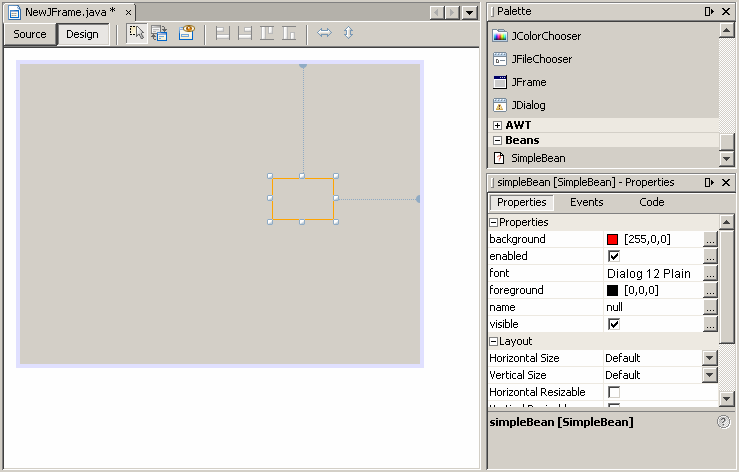

In this section you will learn more about beans by performing the following actions:
- Creating a simple bean
- Compiling the bean
- Generating a Java Archive (JAR) file
- Loading the bean into the GUI Builder of the NetBeans IDE
- Inspecting the bean's properties and events
Your bean will be named
SimpleBean. Here are the steps to create it:
- Write the
SimpleBeancode. Put it in a file namedSimpleBean.java, in the directory of your choice. Here's the code:import java.awt.Color; import java.beans.XMLDecoder; import javax.swing.JLabel; import java.io.Serializable; public class SimpleBean extends JLabel implements Serializable { public SimpleBean() { setText( "Hello world!" ); setOpaque( true ); setBackground( Color.RED ); setForeground( Color.YELLOW ); setVerticalAlignment( CENTER ); setHorizontalAlignment( CENTER ); } }
SimpleBeanextends thejavax.swing.JLabelgraphic component and inherits its properties, which makes the SimpleBean a visual component.SimpleBeanalso implements thejava.io.Serializableinterface. Your bean may implement either theSerializableor theExternalizableinterface.
- Create a manifest, the JAR file, and the class file SimpleBean.class. Use the Apache Ant tool to create these files. Apache Ant is a Java-based build tool that enables you to generate XML-based configurations files as follows:
<?xml version="1.0" encoding="ISO-8859-1"?> <project default="build"> <dirname property="basedir" file="${ant.file}"/> <property name="beanname" value="SimpleBean"/> <property name="jarfile" value="${basedir}/${beanname}.jar"/> <target name="build" depends="compile"> <jar destfile="${jarfile}" basedir="${basedir}" includes="*.class"> <manifest> <section name="${beanname}.class"> <attribute name="Java-Bean" value="true"/> </section> </manifest> </jar> </target> <target name="compile"> <javac destdir="${basedir}"> <src location="${basedir}"/> </javac> </target> <target name="clean"> <delete file="${jarfile}"> <fileset dir="${basedir}" includes="*.class"/> </delete> </target> </project>It is recommended to save an XML script in the
build.xmlfile, because Ant recognizes this file name automatically.- Load the JAR file. Use the NetBeans IDE GUI Builder to load the jar file as follows:
- Start NetBeans.
- From the File menu select "New Project" to create a new application for your bean. You can use "Open Project" to add your bean to an existing application.
- Create a new application using the New Project Wizard.
- Select a newly created project in the List of Projects, expand the Source Packages node, and select the Default Package element.
- Click the right mouse button and select New|JFrameForm from the pop-up menu.
- Select the newly created Form node in the Project Tree. A blank form opens in the GUI Builder view of an Editor tab.
- Open the Palette Manager for Swing/AWT components by selecting Palette Manager in the Tools menu.
- In the Palette Manager window select the beans components in the Palette tree and press the "Add from JAR" button.
- Specify a location for your SimpleBean JAR file and follow the Add from JAR Wizard instructions.
- Select the Palette and Properties options from the Windows menu.
- Expand the beans group in the Palette window. The SimpleBean object appears. Drag the SimpleBean object to the GUI Builder panel.
The following figure represents the SimpleBean object loaded in the GUI Builder panel:

- Inspect Properties and Events. The
SimpleBeanproperties will appear in the Properties window. For example, you can change a background property by selecting another color. To preview your form, use the Preview Design button of the GUI Builder toolbar. To inspect events associated with the SimpleBean object, switch to the Events tab of the Properties window. You will learn more about bean properties and events in the lessons that follow.